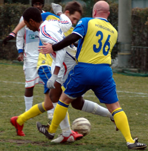
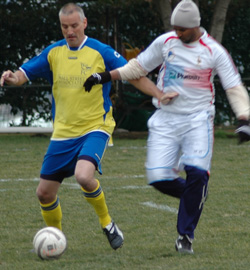
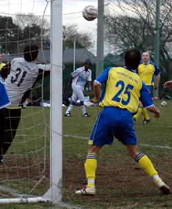

|
YC&AC, Sunday 13th Jan,
WS Clash were unlucky to lineup against a very strong Lions squad, similar to the squad that beat Maritizio 5-0. With some of the players having not played for 3-4 weeks, my personal expectations were 3-0, but a beautiful cross from Ahmed in the first 2 minutes that ended up in the back of the net from Ken's header from close range, made me think more? BUT, celebrations were cut short when to everyone's amazement, the referee ruled out the goal for a foul on the keeper, who could'nt believe his luck.
Lion's kept plucking and eventually a through ball found the pacey Ahmed, and in a one-on-one with a keeper, the outcome is usually a goal, and it was!
A few minutes later a corner that wasnt cleared well fell to a Lion's player who laid off the ball to the edge of the area, for the 17-year old, Omar, who finished in style, despite a slight deflection, making it 2-0.
Omar then upped his tally to 4 goals for the season from the spot, after Clash were penalised for a handball 2 yards out from a shot that may have been going wide.
The first half ended 3-0, with little threat from Clash, and poor Sid isolated upfront with hardly any service from Clash.
The second half saw the introduction of Zuhair, the reliable striker, this time in a central defence role, where he still showed off his skill and agility by an overhead clearance that showed Lions would do anything to keep a clean sheet. This could've been tested had the referee given a penalty against Lions for what seemed to be a fair call for a handball.
A miscommunication between Orlando and defence saw a ball cleared off the Lions' goal line by Mo Birkia.
AbuBakr played well throughout, and when he was replaced by the debutant Hideki, the new man impressed with his pace, skills, and technique. He was even shuffled from midfield, to defence to a striker's position, where he proved to be a utility player, and an excellent addition to the squad.
Ken was unlucky with a few chances, but when Ahmed did all the hard work on the left flank, and laid off a ball 2 yards out for Ken with a gaping goal, the score inevitably went to 4-0.
It wasnt Ken's day, after getting his header ruled out, and especially when a beauty of a left-footed shot from the edge of the box, across the goal, beat the keeper, but hit the post and deflected agonisingly across the goal, only to have Ahmed's shot heroicly blocked by Clash.
Sima's return after missing the last 2 games, showed why Lions conceded a goal without him. His solid performance showed why being an ex-pro puts you at a different level, and the same with Gaafar Somi, who was instrumental in midfield.
Mohammed El-Sheikh's third appearance, this time in his preferred right-back position, and his performance, will surely make him a starter even after Hussein's return from injury. This is what Lions are striving for, at least 2 players competing for each position, to maintain this run and strengthen the squad.
The game was also blessed to see the return from injury for El-Baghir, one of the most consistent and reliable midfielders for Lions.
Orlando, Habib, and Raoof also performed well as expected, and all-in-all solid performace by Lions.
Lions were watched by the sponsor from Panduit, who thoroughly enjoyed the game and performance, despite the freezing cold weather.
Man of the Match: Omar Birkia, 2 goals, and an amazing performance by the young lad.
Report by Hussein Shehata
|